Avoid Many Sicknesses
An ounce of prevention is worth a pound of cure! If we all took more care to eat
well, to keep ourselves, our homes, and our villages clean, and to be sure that
our children are vaccinated, we could stop most sicknesses before they start.
In Chapter 11 we discussed eating well. In this chapter we talk about cleanliness and vaccination.
CLEANLINESS—AND PROBLEMS THAT COME FROM LACK OF CLEANLINESS
Cleanliness is of great importance in the prevention of many kinds of infections—
infections of the gut, the skin, the eyes, the lungs, and the whole body. Personal cleanliness (or hygiene) and public cleanliness (or sanitation) are both important.
Many common infections of the gut are spread from one person to another
because of poor hygiene and poor sanitation. Germs and worms (or their eggs)
are passed by the thousands in the stools or feces (shit) of infected persons. These are carried from the feces of one person to the mouth of another by dirty fingers or contaminated food or water. Diseases that are spread or transmitted from feces-tomouth in this way, include:
• diarrhea and dysentery (caused by amebas and bacteria)
• intestinal worms (several types)
• hepatitis, typhoid fever, and cholera
• certain other diseases, like polio, are sometimes spread this same way
The way these infections are
transmitted can be very direct.
For example: A child who has worms
and who forgot to wash his hands after his last bowel movement, offers his friend a cracker. His fingers, still dirty with his own stool, are covered with hundreds of tiny worm eggs (so small they cannot be seen). Some of these worm eggs stick to the cracker. When his friend eats the cracker, he swallows the worm eggs, too.
Soon the friend will also have worms.
His mother may say this is because he ate sweets. But no, it is because he ate shit!


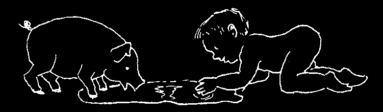
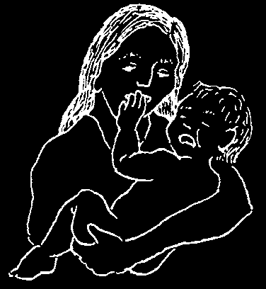

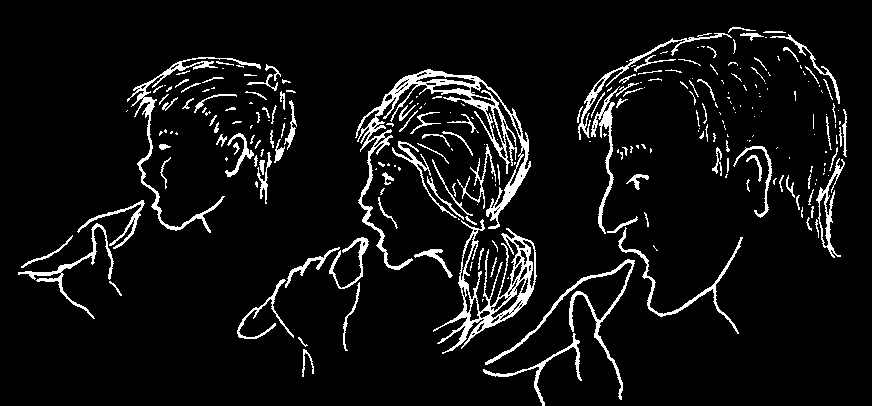
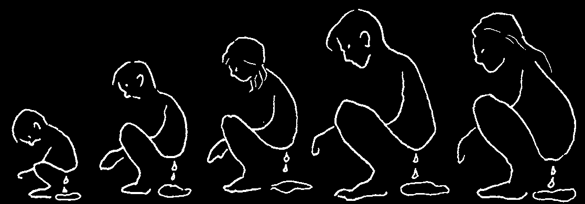
Many times pigs, dogs, chickens, and other animals spread intestinal disease and worm eggs. For example:
A man with diarrhea
A pig eats his stool,
Then the pig goes into or worms has a bowel dirtying its nose and the house.
movement behind his feet.
house.
In the house a child is playing on the floor. In
Later the child this way, a bit of the man’s stool gets on the starts to cry, and the child, too.
mother takes
him in her
arms.
Then the mother prepares
The family eats the food.
food, forgetting to wash her
hands after handling the
child.
And soon, the whole family has
diarrhea or worms.

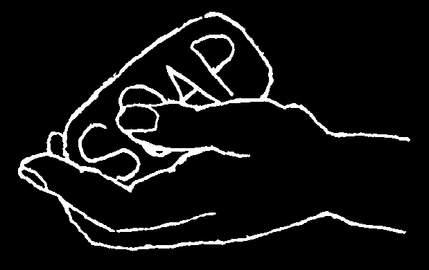

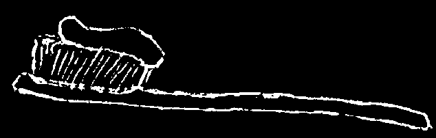
Many kinds of infections, as well as worm eggs, are passed from one person to another in the way just shown.
If the family had taken any of the following precautions, the spread of the sickness could have been prevented:
• if the man had used a latrine or out-house,
• if the family had not let the pigs come into the house,
• if they had not let the child play where the pig had been,
• if the mother had washed her hands after touching the child and before preparing food.
If there are many cases of diarrhea, worms, and other intestinal parasites in your village, people are not being careful enough about cleanliness. If many children die from diarrhea, it is likely that poor nutrition is also part of the problem.
To prevent death from diarrhea, both cleanliness and good nutrition are important (see p. 154 and Chapter 11).
BASIC GUIDELINES OF CLEANLINESS
Personal Cleanliness (Hygiene)
1. Always wash your hands with soap when you get up in the morning, after having a bowel movement, and before cooking or eating.
2. Bathe often every day when the weather is hot. Bathe after working hard or sweating. Frequent bathing helps prevent skin infections, dandruff, pimples, itching, and rashes. Sick persons, including babies, should be bathed daily.
3. In areas where hookworm is common, do not go barefoot or allow children to do so. Hookworm infection causes severe anemia. These worms enter the body through the soles of the feet (see p. 142).
4. Brush your teeth every day and after each time you eat sweets. If you do not have a toothbrush and toothpaste, rub your teeth with salt and baking soda (see p. 230). For more information about the care of teeth, see Chapter 17.
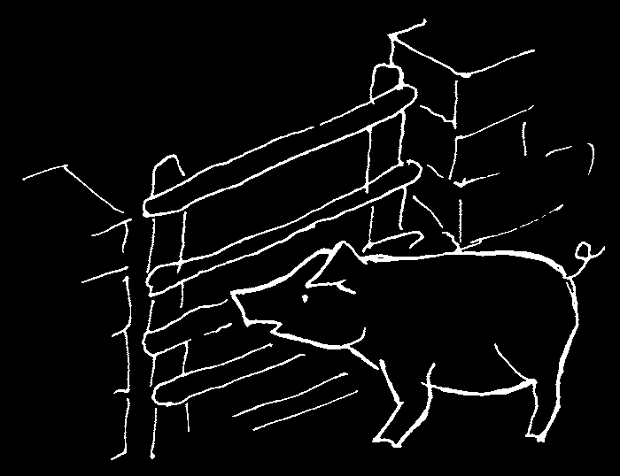


Cleanliness in the Home
1. Do not let pigs or other animals come into the house or places where children play.
2. Do not let dogs lick children or climb up on beds. Dogs, too, can spread disease.
3. If children or animals have a bowel movement near the house, clean it up at once. Teach children to use a latrine or at least to go farther from the house.
4. Hang or spread sheets and blankets in the sun often.
If there are bedbugs, pour boiling water on the cots and wash the sheets and blankets—all on the same day (see p. 200).
5. De-louse the whole family often (see p. 200). Lice and fleas carry many diseases. Dogs and other animals that carry fleas should not come into the house.
6. Do not spit on the floor. Spit can spread disease. When you cough or sneeze, cover your mouth with your hand or a cloth or handkerchief.
7. Clean house often. Sweep and wash the floors, walls, and beneath furniture. Fill in cracks and holes in the floor or walls where roaches, bedbugs, and scorpions can hide.
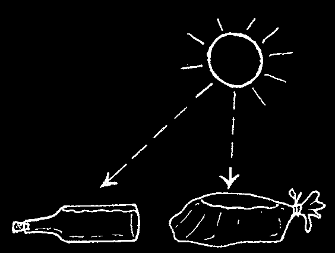

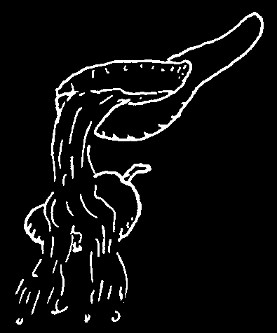
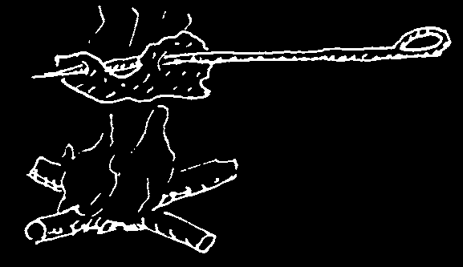

Cleanliness in Eating and Drinking
1. Ideally, all water that does not come from a pure water system should be boiled, filtered, or purified before drinking. This is especially important for small children, people with HIV, and times when there is a lot of diarrhea or cases of typhoid, hepatitis, or cholera. However, to prevent disease, having enough water is more important than having pure water. Also, asking poor families to use a lot of time or money for fire wood to boil drinking water may do more harm than good, especially if it means less food for the children or more destruction of forests. For more information on clean water, see
A Community Guide to Environmental Health, Chapter 5.
A good, low-cost way to purify water is to put it in a clean, clear bottle or a clear plastic bag and leave it in direct sunlight for at least 6 hours. If it is cloudy, leave the water exposed to sun for at least 2 days. This method will kill most germs in the water.
2. Do not let flies and other insects land or crawl on food.
These insects carry germs and spread disease. Do not leave food scraps or dirty dishes lying around, as these attract flies and breed germs. Protect food by keeping it covered or in boxes or cabinets with wire screens.
3. Before eating fruit that has fallen to the ground, wash it well. Do not let children pick up and eat food that has been dropped—wash it first.
4. Only eat meat and fish that is well cooked. Be careful that roasted meat, especially pork and fish, do not have raw parts inside. Raw pork carries dangerous diseases.
5. Chickens carry germs that can cause diarrhea. Wash your hands after preparing chicken before you touch other foods.
6. Do not eat food that is old or smells bad. It may be poisonous.
Do not eat canned food if the can is swollen or squirts when opened. Be especially careful with canned fish. Also, be careful with chicken that has passed several hours since it was cooked.
Before eating left-over cooked foods, heat them again, very hot.
If possible, give only foods that have been freshly prepared, especially to children, elderly people, and very sick people.
7. People with tuberculosis, flu, colds, or other diseases that spread easily should eat separately from others. Plates and utensils used by sick people should be cleaned very well before being used by others.
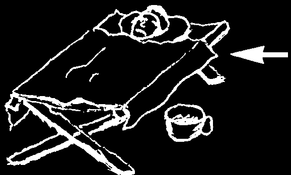


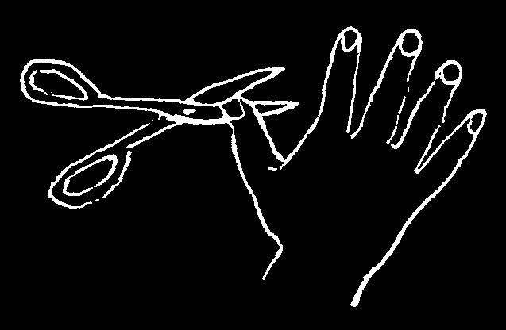
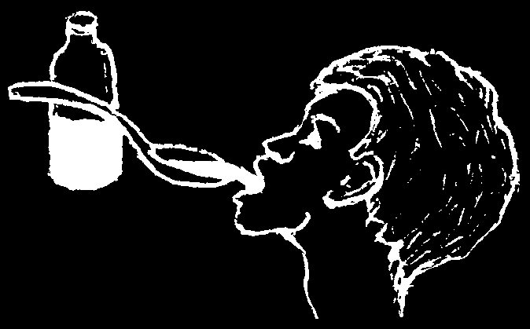

How to Protect Your Children’s Health
1. A sick child like this one should sleep apart from children who are well.
Sick children or children with sores, itchy skin, or lice should always sleep separately from those who are well. Children with infectious diseases like whooping cough, measles, or the common cold should sleep in separate rooms, if possible, and should not be allowed near babies or small children.
2. Protect children from tuberculosis. People with long-term coughing or other signs of tuberculosis should cover their mouths whenever they cough. They should never sleep in the same room with children. They should see a health worker and be treated as soon as possible.
Children living with a person who has tuberculosis should be vaccinated against TB (B.C.G. Vaccine).
3. Bathe children, change their clothes, and cut their fingernails often. Germs and worm eggs often hide beneath long fingernails.
4. Treat children who have infectious diseases as soon as possible, so that the diseases are not spread to others.
5. Follow all the guidelines of cleanliness mentioned in this chapter. Teach children to follow these guidelines and explain why they are important. Encourage children to help with projects that make the home or village a healthier place to live.
6. Be sure children get enough good food. Good nutrition helps protect the body against many infections. A well-nourished child will usually resist or fight off infections that can kill a poorly nourished child (read Chapter 11).
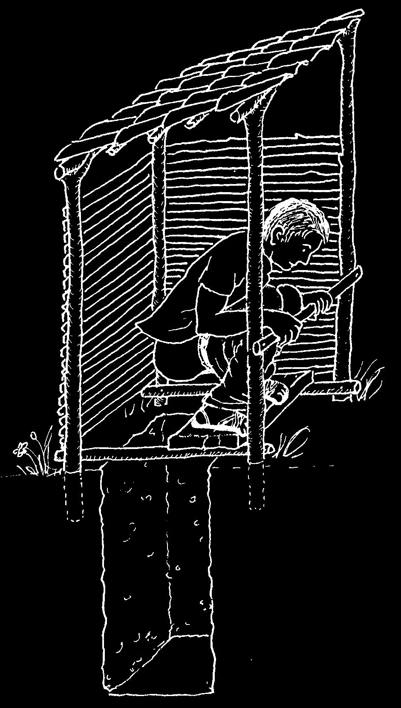
Public Cleanliness (Sanitation)
1. Keep wells and public water holes clean. Do not let animals go near where people get drinking water. If necessary, put a fence around the place to keep animals out.
Do not defecate (shit) or throw garbage near the water hole. Take special care to keep rivers and streams clean upstream from any place where drinking water is taken.
2. Burn all garbage that can be burned. Garbage that cannot be burned should be buried in a special pit or place far away from houses and the places where people get drinking water.
3. Build latrines (out-houses, toilets) so pigs and other animals cannot reach the human waste. A deep hole with a little house over it works well. The deeper the hole, the less problem there is with flies and smell.
Here is a drawing of a simple out-house that is easy to build.
It helps to throw a little lime, dirt, or ashes in the hole after each use to reduce the smell and keep flies away.
Out-houses should be built at least 20 meters from homes or the source of water.
If you do not have an out-house, go far away from where people bathe or get drinking water. Teach your children to do the same.
Use of latrines helps prevent many sicknesses.
Ideas for better latrines are found on the next pages. Also latrines can be built to produce good fertilizer for gardens. See A Community Guide to
Environmental Health, Chapter 7.
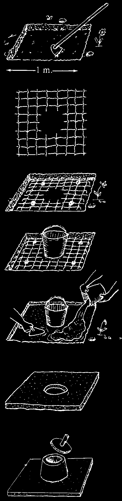
BETTER LATRINES
The latrine or out-house shown on the previous page is very simple and costs almost nothing to make. But it is open at the top and lets in flies.
Closed latrines are better because the flies stay out and the smell stays in. A closed latrine has a platform or slab with a hole in it and a lid over the hole. The slab can be made of wood or cement. Cement is better because the slab fits more tightly and will not rot.
One way to make a cement slab:
1. Dig a shallow pit, about 1 meter square and 7 cm. deep. Be sure the bottom of the pit is level and smooth.
2. Make or cut a wire mesh or grid 1 meter square. The wires can be ¼ to ½ cm. thick and about 10 cm. apart. Cut a hole about 25 cm.
across in the middle of the grid.
3. Put the grid in the pit. Bend the ends of the wires, or put a small stone at each corner, so that the grid stands about 3 cm. off the ground.
4. Put an old bucket in the hole in the grid.
5. Mix cement with sand, gravel, and water and pour it until it is about 5 cm. thick. (With each shovel of cement mix 2 shovels of sand and 3 shovels of gravel.)
6. Remove the bucket when the cement is beginning to get hard (about 3 hours). Then cover the cement with damp cloths, sand, hay, or a sheet of plastic and keep it wet. Remove the slab after 3 days.
If you prefer to sit when you use the latrine, make a cement seat like this:
Make a mold, or you can use 2 buckets of different sizes, one inside the other.
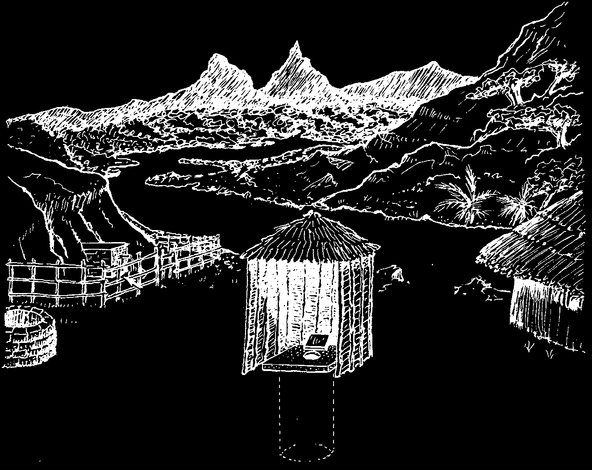
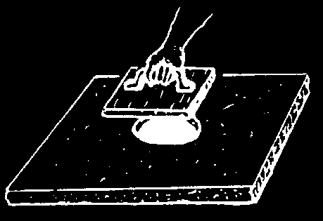

To make the closed latrine, the slab should be placed over a round hole in the ground. Dig the hole a little less than 1 meter across and between 1 and 2 meters deep. To be safe, the latrine should be at least 20 meters from all houses, wells, springs, rivers or streams. If it is anywhere near where people go for water, be sure to put the latrine downstream.
CLOSED LATRINE:
more than
20 m.
more than
20 m.
more than
20 m.
more than
20 m.
1 - 2 m.
Keep your latrine clean. Wash the slab often. Be sure the hole in the slab has a cover and that the cover is kept in place. A simple cover can be made of wood.
fly
screen
Keep
door vent closed.
THE FLY-TRAPPING VIP LATRINE
pipe
To make the ventilated improved pit (VIP)
latrine, make a larger slab (2 meters square)
with 2 holes in it. Over one hole put a ventilation pipe, covered with fly screen (wire screen lasts flies and longer). Over the other hole build an out house, odors which must be kept dark inside. Leave this hole uncovered.
3 m.
This latrine helps get rid of odors and flies:
smells escape through the pipe, and flies get trapped there and die!
1 ½ m.

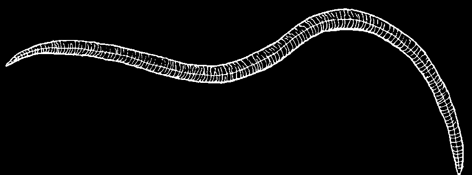
WORMS AND OTHER INTESTINAL PARASITES
There are many types of worms and other tiny animals (parasites) that live in people’s intestines and cause diseases. Those which are larger are sometimes seen in the stools (feces, shit):
1. ROUNDWORM (Ascaris)
4. HOOKWORM
2. PINWORM
3. WHIPWORM
(threadworm)
(Trichuris)
5. TAPEWORM
The only worms commonly seen in the stools are roundworms, pinworms, and tapeworms. Hookworms and whipworms may be present in the gut in large numbers without ever being seen in the stools.
Note on worm medicines: Many 'worm medicines’ contain piperazine. These work only for roundworms and pinworms and should not be given to babies and small children. Mebendazole (Vermox) is safer and attacks many more kinds of worms.
Albendazole and pyrantel also work for many kinds of worms, but they may be expensive. Thiabendazole attacks many kinds of worms, but causes dangerous side effects and should usually not be used. See pages 373 to 375 for more information on all these medicines.
Roundworm (Ascaris)
20 to 30 cm. long. Color: pink or white
How they are spread:
Feces-to-mouth. Through lack of cleanliness, the roundworm eggs pass from one person’s stools to another person’s mouth.
Effect on health:
Once the eggs are swallowed, young worms hatch and enter the bloodstream;
this may cause general itching. The young worms then travel to the lungs, sometimes causing a dry cough or at worst, pneumonia with coughing of blood. The young worms are coughed up, swallowed, and reach the intestines, where they grow to full size.
Many roundworms in the intestines may cause discomfort, indigestion, and weakness. Children with many roundworms often have very large, swollen bellies.
Rarely, roundworms may cause asthma, or a dangerous obstruction or blockage in the gut (see p. 94). Especially when the child has a fever, the worms sometimes come out in the stools or crawl out through the mouth or nose. Occasionally they crawl into the airway and cause gagging.